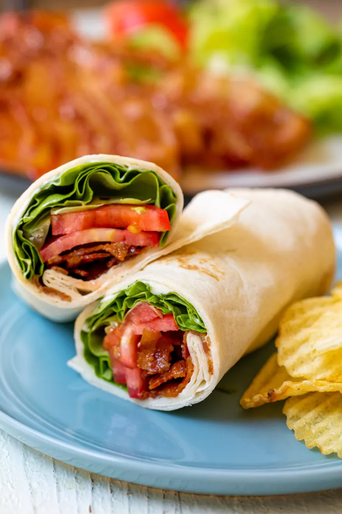

BLT Wraps

A simple (yet effective) appetizer!
What could be more simple than a Wrap? And what could be also so yummy as a classic BLT? The short answer: nothing
Ingredients
- 1 pound bacon
- 1 head butter lettuce, leaves roughly chopped
- 3 small ripe tomatoes, sliced
- 6 large burrito-size tortilla wraps
For the easy chive mayo:
- 1/2 cup mayo
- 2 tablespoons thinly sliced fresh chives
- 1 tablespoon lemon juice
- 1/2 teaspoon garlic powder
- 1/8 teaspoon kosher salt
Method
- Preheat oven to 375˚F.
- Arrange the bacon on a few baking sheets with foil or elevate them on a wire rack, making sure the bacon is not overlapping.
Bake the bacon for 15-20 minutes until it’s browned and crispy. Then remove the bacon from the baking sheet and let it drain on a few paper towels.
- In a medium bowl combine the mayo, chives, lemon juice, garlic powder, and salt. Set aside.
- Spread about 2 tablespoons of the chive mayo onto your wrap. Then layer with butter lettuce, tomato slices, followed by 3-4 strips of crispy bacon.
Fold the edges over on the wrap and roll it into a tight cylinder. Cut the wrap in half for easier eating.
Continue until all wraps are assembled.
- Roll the wrap tightly in foil and keep it in the fridge until you leave. I like to pack the wraps in a bag with a cold pack, but they are fine wrapped up for a few hours also. I think the wrap is best when the lettuce is nice and crispy and cold.
Wrap ingredients all keep well in the fridge for 1 week. Make wraps on the day you are eating them!